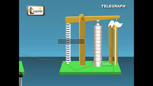

Boakye Dennis Okyere
Data Communication student focused on networking, signal systems, and modern digital transmission.
This web presentation highlights key concepts from my Data Communication coursework, illustrating how information travels between devices, the role of protocols, and the evolution of telegraph systems.
Overview of Data Communication
Data communication moves information between devices using wires, fiber, and wireless signals. This section summarizes the core concepts, modern uses, and the structure that makes networks work.
Foundations
Communication began with the telegraph and now includes copper cable, fiber, and radio. The same idea applies: encode data, send it over a medium, and decode it at the receiver.
Transmission
Signals can be analog or digital. Digital systems use binary symbols, while analog systems vary continuously. Designers choose media and encoding based on distance, bandwidth, and noise.
Protocols
Protocols define how devices format messages, interpret signals, and recover from errors. Layered models such as OSI and TCP/IP make networks easier to manage and allow diverse systems to interoperate.
Delivery
Packet switching divides data into small units, routes them independently, and recombines them at the destination. This approach is efficient and resilient, especially for internet traffic.
Data Communication Topics
This section presents the essential concepts that govern modern data communication. Each topic explains how systems connect, how signals travel, and why protocols matter.
Introduction
Data communication is the exchange of information between devices using wired or wireless channels. It enables the seamless transfer of digital content, supporting collaboration, cloud access, and live multimedia services.
In modern systems, this exchange happens on many scales. A single smartphone message may travel through a local network, across a city backbone, and over an international internet route before it reaches the recipient.
The core idea is simple: data must be encoded, transmitted, and decoded. The details of how that happens are what make data communication both challenging and interesting.
Core Components
Every system depends on five core elements: sender, receiver, message, transmission medium, and protocol. These components work together to deliver information accurately and efficiently.
The sender formats the message and places it on the medium. The receiver extracts the signal, interprets it, and presents the data in a useful form. Protocols ensure both sides agree on the meaning of each exchange.
Signal Types
Signals can be analog or digital. Analog signals vary continuously, while digital signals use discrete values for higher accuracy and improved noise resistance.
Digital signaling is common in modern networks because it is easier to detect and correct errors. Analog signals still appear in radio and audio systems where smooth variation is useful.
Understanding the advantages of each type is important when choosing a transmission medium, designing modulation schemes, or building a reliable communication link.
Transmission Modes
Transmission modes determine how data flows between systems: simplex, half-duplex, and full-duplex. Each mode chooses whether communication is one-way, alternating, or simultaneous.
Simplex is one-direction only, such as a keyboard sending input to a display. Half-duplex allows both directions but only one at a time, like older walkie-talkies.
Full-duplex lets both sides transmit simultaneously, which is essential for phone calls, video conferencing, and interactive applications.
Applications
Data communication powers finance, healthcare, education, transportation, and entertainment. It enables secure messaging, remote monitoring, and online services.
In healthcare, patient monitoring systems send vital signs in real time. In finance, trading platforms move orders and market data with extreme speed and precision.
Education benefits from remote classrooms, digital libraries, and collaborative tools that let students and teachers connect from anywhere.
Protocols
Protocols such as TCP/IP, HTTP, and SMTP establish the rules for transmitting data. Standardized communication ensures messages arrive intact and systems can interoperate.
Protocols define the format of packets, how devices identify each other, and how errors are detected and corrected. This structure allows networks to grow without becoming chaotic.
A strong data communication design uses layered protocols so each layer can focus on a specific responsibility, from the physical signal to the application message.
Telegraph Diagram

The telegraph image now represents the key and line animation concept in this section.

Sender
The sender encodes the message and sends it through the telegraph line.

Telegraph Wire
The telegraph wire carries the electrical signal between the sender and receiver.
Receiver
The receiver decodes the incoming signal into the original message.
What Inspires Me
The evolution of data communication inspires me because it connects people, empowers innovation, and improves access to information around the world.
Connectivity
I am inspired by how communication networks bridge distances, making global collaboration and real-time interaction possible.
Performance
The speed, reliability, and precision of modern data channels motivate me to learn how these systems continue to improve.
Future Growth
Continuous innovation in protocols and infrastructure creates exciting opportunities for new services and smarter communication systems.
Learning
Understanding data communication gives me the tools to design better systems and solve real-world networking challenges.
Impact
Data communication improves lives by enabling remote services, efficient workflows, and fast access to information.
Innovation
The field is always evolving with new technologies, making every project a chance to contribute to the next generation of communication systems.
Summary and Reflection
This final section reflects on the main lessons of the assignment and explains why a broad understanding of data communication is important for both academic success and future technology work.
Connecting concepts to practice
A successful learning experience links the idea of a sender, receiver, and channel with the real-world systems that move information from one point to another. In this assignment, the telegraph is one early example and the internet is a modern extension of the same fundamental goals. Seeing that connection makes the material easier to remember and easier to apply.
The course emphasizes not just definitions, but also how engineers reason about tradeoffs. When should a system use a wired connection instead of wireless? When should it prefer reliability over low latency? Those are the kinds of questions that professional network designers ask every day.
Preparing for future study
The learning outcomes from this assignment extend beyond the specific topics covered here. Understanding data communication builds a foundation for networking, cybersecurity, cloud computing, and even emerging technologies like edge AI and smart infrastructure. That broad foundation supports future courses and practical engineering work.
As a student, mastering these fundamentals gives you the confidence to read technical specifications, to evaluate solutions, and to explain how systems behave. This assignment is a step toward those larger capabilities, and the clear text and structured content help make that step meaningful.
Resources
Explore the demonstration video and download the assignment materials for further review.
Download the assignment and Turnitin copy below.
Download Turnitin PDFRecords & Documents
Keep your important assignment files, notes, and study records organized in one place. Update this section with links to your latest documents and references.
Assignment Files
Course Notes
Personal Log
Study Dashboard
Access your quizzes, review performance, and upload notes or files in a single organized workspace. This dashboard helps you keep coursework and documents ready.
Start a Quiz
Practice your understanding with a short quiz on data communication topics. Each round is designed to reinforce concepts and test your readiness.
Quiz Results
Review your latest scores, track improvement, and identify topics that need more attention. Well-organized results help you study more efficiently.
Upload Files
Store your assignments, reference photos, and study documents here. Upload them once and access them as you continue working.